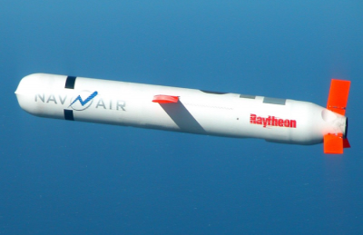
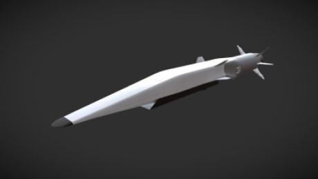
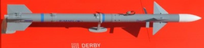
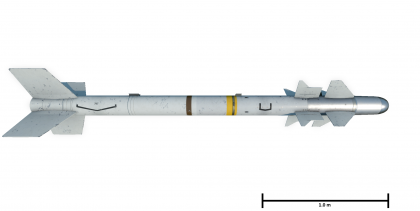
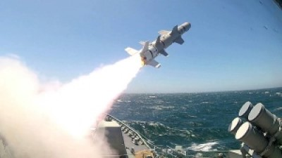
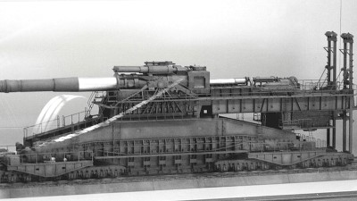
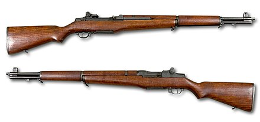
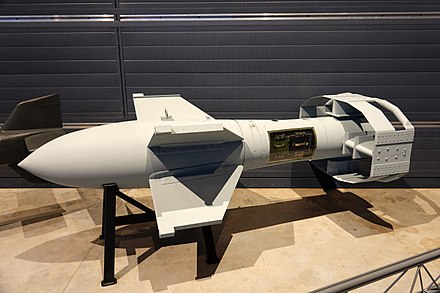
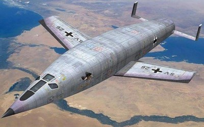
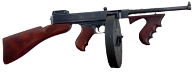

| Número | Nome | Valor | Ilustração | Vídeo |
|---|---|---|---|---|
| 0001 | Míssil Tomahawk
A arma é estratégica para ataques de longa distância e integra o arsenal bélico americano desde a Guerra do Golfo em 1991, pode carregar até 453 kg de ogivas. Tomahawk é uma arma “moderna, madura, poderosa” capaz de “ataques precisos em alvos de alto valor com danos colaterais mínimos”. Cada unidade custa cerca de 832.000 dólares (2.6 milhões de reais), segundo a Marinha americana.
|
US$832.00 |  | |
| 3M22 | Zircon
O Zircon (ou 3M22) é um míssil de cruzeiro antinavio, ou seja, projetado para percorrer longas distâncias, guiado, de modo a atingir embarcações com sua carga explosiva. Ele voa significativamente mais rápido que outros mísseis antinavio russos e mísseis antinavio em serviço com outros países. Armas hipersônicas podem ultrapassar a velocidade do som, mas o Zircon é capaz de atingir uma velocidade de cerca de 9 Mach para um alcance de mais de 1.000 km e uma altitude de 30-40 km, onde a resistência do ar é baixa e a velocidade pode ser maior.
|
US$ 210 milhões |  | |
| 0003 | 1-Derby ER
O míssil 1-Derby ER é um míssil ar-ar com alcance de mais de 100 km com um motor de foguete de pulso duplo e um radar ativo, proporcionando vantagens de desempenho excepcionais em curtas distâncias ou além do alcance visual. O míssil tem capacidade BVR, permitindo ao operador atacar vários alvos simultaneamente.
|
US$ 1 bilhão |  | |
| R.550 | Magic
A Magia R.550 ( backronym para Missile Auto-Guide Intercepção et Combate ) é um de curto alcance de mísseis ar-ar concebido em 1968 pela empresa francesa Matra para competir com os americanos AIM-9 Sidewinder , e tornou-se compatível com as versões anteriores do hardware de lançamento do Sidewinder.
|
US$ 2 milhões |  | |
| RGM-84 | RGM-84 Harpoon Block II
O RGM-84 Harpoon é um míssil anti-navio, lançado em todas as condições meteorológicas, sobre o horizonte, anti-navio. Sua trajetória de cruzeiro de baixo nível, navegação marítima, orientação ativa por radar e projeto de ogivas garantem alta capacidade de sobrevivência e eficácia.
|
US$ 1,4 milhão |  | |
| 0251 | Schwerer Gustav
Os nazistas, no poder já havia dois anos, pensaram na resposta: construir um canhão que destruísse tal barreira. O resultado foi a maior arma já usada em combate, o Schwerer Gustav – ou Gustav Pesado. Ele tinha 46,3 metros de comprimento, 11,6 de altura e pesava 1 350 toneladas – equivalente a 20 tanques superpesados Tiger II, os maiores da guerra.
|
US$ 2 bilhões |  | |
| 0895 | M1 Garand
O M1 Garand é um rifle semiautomático calibre .30-06 que foi o rifle de serviço padrão dos Estados Unidos durante a Segunda Guerra Mundial e a Guerra da Coréia e também teve serviço limitado durante a Guerra do Vietnã . A maioria dos rifles M1 foi entregue às forças dos EUA, embora muitas centenas de milhares também tenham sido fornecidos como ajuda estrangeira aos aliados americanos. O Garand ainda é usado por equipes de treinamento e guardas de honra militares . Também é amplamente utilizado por civis para caça, tiro ao alvo e como colecionador militar.
|
R$ 4.131,82 |  | |
| 0745 | Fritz X
Fritz X era o nome mais comum para uma bomba planadora antinavio guiada alemã usada durante a Segunda Guerra Mundial . Fritz X foi a primeira arma guiada de precisão do mundo implantada em combate [ carece de fontes? ] E a primeira a afundar um navio em combate. [ carece de fontes? ] Fritz X era um apelido usado tanto pelo pessoal da Allied quanto da Luftwaffe . Os nomes alternativos incluem Ruhrstahl SD 1400 X , Kramer X-1 , PC 1400X ou FX 1400 (o último, junto com o PC 1400 Fritz não guiado apelido, é a origem do nome "Fritz X").
|
US$ 500 milhões |  | |
| 0853 | Silbervogel
O Silbervogel era um avião foguete do tipo lifting-body, e contando o número de aviões foguete bem sucedidos construidos nos últimos 70 anos, você já pode imaginar onde isso vai parar. As missões absolutamente secretas haviam começadp bem na Alemanha. Em um trilho de três quilômetros, o Silbervogel seria acelerado a 1920 km/h por um trenó foguete movido por um conjunto de motores a foguete. Uma vez no ar, ele faria a ignição de seu próprio motor e queimaria as 90 toneladas de combustível que preenchiam seu corpo prateado para atingir Mach 30 a uma altitude de 194.000 metros, metas de desempenho de um futuro distante e bem ao modo dos filmes de ficção científica. O lançamento teria sido a parte fácil.
|
US$ 480 milhões |  | |
| 0412 | Metralhadora Thompson
A submetralhadora Thompson (também conhecida como "Tommy Gun" , "Chicago Typewriter" , "Chicago Piano" ou "Trench Broom" ) é uma submetralhadora acionada por blowback , resfriada a ar e alimentada por magazine , inventada pelo general brigadeiro do exército dos Estados Unidos John T. Thompson em 1918. Ele foi originalmente projetado para quebrar o impasse da guerra de trincheiras da Primeira Guerra Mundial , mas não foi concluído até o fim da guerra.
|
US$ 80 milhões |  |